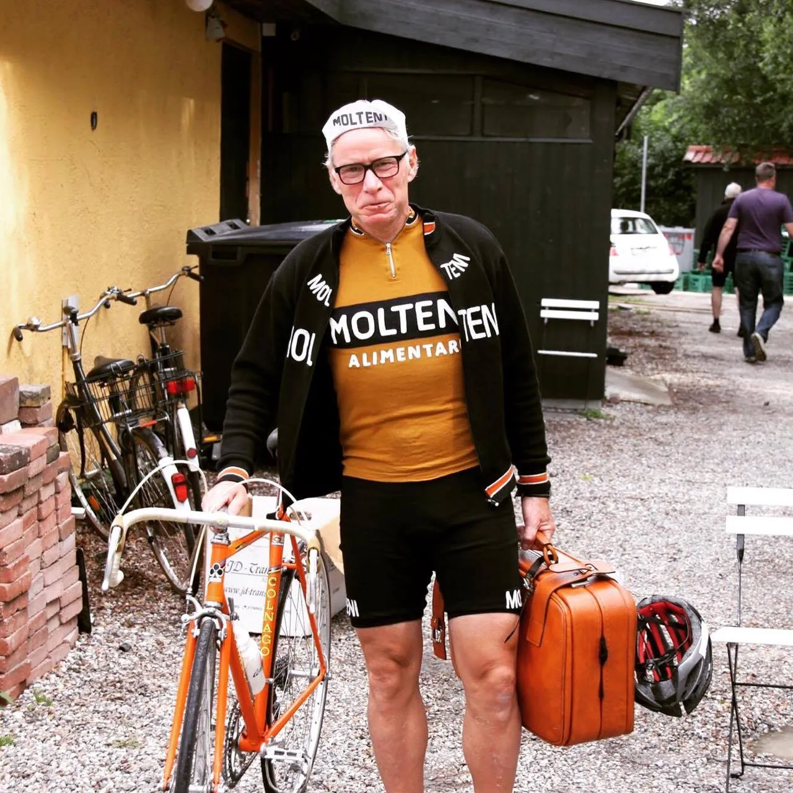
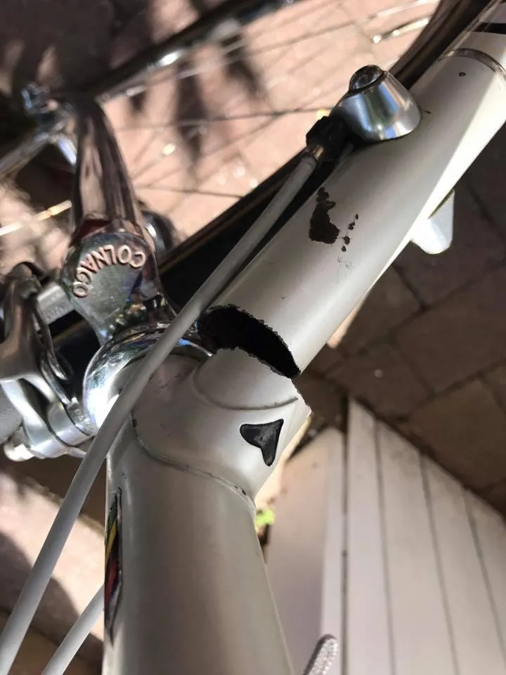
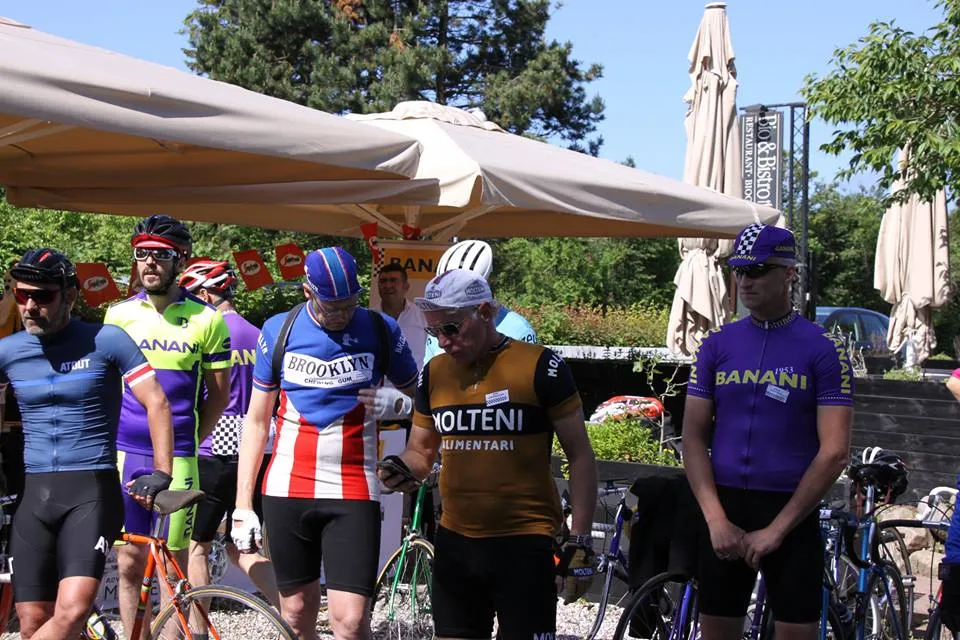

Dramatisk Bananifinale med Brooklyn som den store taber

41 stålryttere stod til start ved Tisvilde Bistro til årets Bananiløb. Der var selvklart mange bananister, men også mange andre flotte stålcykler.
Grundet diverse løbsarrangørers klækkelige startpenge til Squadra Molteni, var de fleste fra Moltenis hold til start på Fyn Rundt. Derfor bestod Molteniholdet til Bananiløbet af to ryttere, de sjællandske domestiques Jacob Ingemann og Jens Langergaard. Fra andre etablerede danske hold var Brooklyn til start med én mand.

Social ride med stram kæde
Bananiløbet er primært et social ride – så der blev fra overbananist og arrangør Søren Rasmussen lagt op til samlet gruppe i træningstempo på den lange 58 km distance rundt om Arresø, og så give løbet frit 5-10 km før mål hvor der så skulle køres om kap.
Der blev dog lagt et mildest talt hårdt træningstempo på +35-36 km/t så snart vi var ude af Tisvilde. Et par Bananiryttere og de to skarpe Gentofte-ryttere Jonathan Fanøe – på en smuk, smuk Willier Chromovelato – og Christian Boas Linde satte pænt stram kæde og gruppen røg over i to. Både Jacob Ingemann og Jens Langergaard holdt sig til i frontgruppen.
Styrt og en Colnagos død
En af Squadra Moltenis mange gode venner, Yehns Diche var også til start og favorit. Men ved starten havde Yehns opdaget en revne i skrårøret på sin Colnago og Lars Bryde rådede ham til at “køre som en mis”. Yehns’ Colnago knagede og bragede på den kuperede rute. Men holdt indtil videre. Også til den hårde kantstensoverkørsel der mødte rytterne i et højresving ca 20 km fra mål.
Hér røg der til gengæld to ryttere i asfalten og hele gruppen gjorde holdt indtil småskrammer og cykler var fixet. Kort tid efter blev farten sat op og med ca 10 til mål indledtes finalen. Den var kun få kilometer gammel før skrårøret på Yehns’ Colnago knækkede og han forsigtigt rullede den i rabatten mens vi øvrige fortsatte.

Dramatisk finale mellem Brooklyn og Molteni
Brooklyns eneste rytter, Thomas Marker, havde på sociale medier inden start annonceret en podieplads til Brooklyn, og forsøgte som sædvanligt at køre fri af feltet langt ude fra. Her fik han lov at stege og trække lidt inden hullet blev lukket og Thomas røg ned gennem gruppen.
Med cirka 3 km til mål stak Gentofterytteren Boas Linde og fik hurtigt 200 meter. Et farligt udbrud vurderede Langergaard og med de sidste kræfter, og håbet om at Jacob hang på, stak Jens Langergaard efter udbryderne, og fik stort set lukket hullet inden en gruppe på tre kørte forbi Jens og op til Fanøe. Jacob var desværre ikke med, men lå lidt længere bagved inden han endelig kom ræsende og fik kontakt til frontgruppen. Lige bag den havde Jens Langergaard ikke mere at skyde med og 500 meter før mål trak Brooklyns Thomas Marker forbi med meldingen:
“Husk at få det her med i løbsrapporten”.
Dét er hermed gjort…
Men Thomas havde forregnet. På den lille bakke inden mål ved Bistroen samlede Langergaard nye kræfter og rykkede forbi en helt forsvarsløs og bandende Marker.

De to Gentofteryttere vandt spurten med Lars Bryde og Jacob lige efter. Biltrafik ved opløbet gjorde det svært for Jacob at spurte og den stærkt kørende Lars Bryde tog 3.pladsen. Jens kom ind som vist 7’er kort tid efter.
Tak til Søren, Tulle og mange andre for godt arrangement og efterfølgende mad og hygge på bistroen.